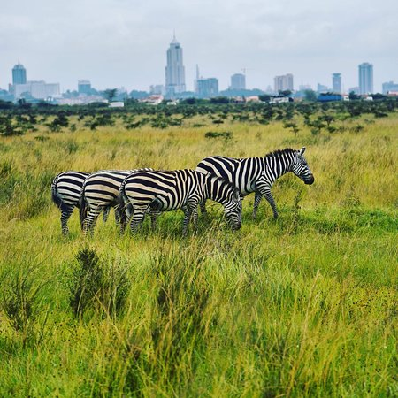
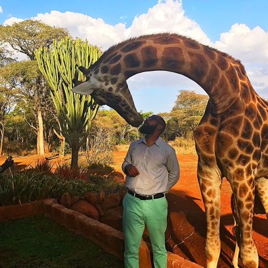

 Nairobi National Park Duration: 3 to 4hrs Fee: Starts for $60 7km from the city center Visit National Park
 Giraffe Center Duration: 2 to 3hrs Fee: Starts for $30 7km from the city center Visit Giraffe Center